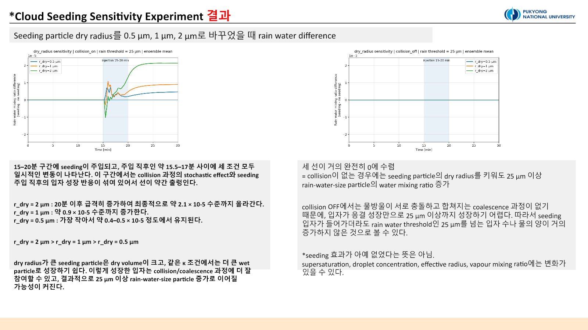

Experiment 2. Sensitivity to Seeded-Particle Properties and Injection Timing
Neither the main experiment nor the follow-up used PySDM-Seeding-Lab. Both were independent PySDM parcel studies developed in Visual Studio Code and run on the laboratory server. This page combines the 2 July sensitivity study and the 3 July diagnostic follow-up.
Which particle should be injected, and when?
Experiment 1 showed that rain-water response is sensitive to representation and random seed. Here, n_sd_initial = n_sd_seeding = 1,000 was fixed while three physical controls were varied: seeded-particle dry radius, hygroscopicity κ, and injection window.
The PySDM seeding_no_collisions parcel framework was extended to four cases per condition: no seeding and seeding with collision ON, then the same pair with collision OFF. Every reported effect is seeding minus its matching no-seeding baseline.
| Sensitivity axis | Values | Fixed settings |
|---|---|---|
| Dry radius | 0.5, 1.0, 2.0 µm | κ = 0.8, 15–20 min |
| κ | 0.3, 0.5, 0.8, 1.0 | dry radius = 1 µm, 15–20 min |
| Injection timing | 10–15, 15–20, 20–25 min | dry radius = 1 µm, κ = 0.8 |
The main study used a 10-member ensemble with Formulae seeds 100–109. Rain water was the water mixing ratio carried by particles with wet radius at least 25 µm.
Dry radius

With collision ON, the final response followed 2 µm > 1 µm > 0.5 µm. Approximate values on the plotted scale were \(2.1\times10^{-5}\), \(0.9\times10^{-5}\), and \(0.4\)–\(0.5\times10^{-5}\).
Larger dry particles can reach larger wet sizes and participate in coalescence more readily. However, this was a fixed-number design: increasing dry radius also increased total injected dry mass. The result cannot be interpreted as a pure size effect. That confounding factor motivates the fixed-mass design in Experiment 3.
Hygroscopicity κ

The late response ranked κ = 1.0 > 0.8 > 0.5 > 0.3, with approximate final values of \(1.0\), \(0.9\), \(0.75\), and \(0.65\times10^{-5}\). More hygroscopic particles took up water more readily and entered the collision pathway more effectively.
Collision-OFF rain water remained nearly zero across κ. That does not mean nothing changed: vapour, number, and cloud-size radius diagnostics may respond even when condensation alone does not cross the 25 µm threshold.
Injection timing

Injection at 10–15 min produced a brief positive spike followed by a negative excursion to roughly \(-3.8\times10^{-5}\) and ended near zero. Early injection may have increased vapour competition and small-droplet number before efficient rain-size growth was possible.
The 15–20 min window produced a smoother positive response ending near \(0.9\times10^{-5}\). The 20–25 min window rose rapidly after 22–23 min and ended near \(2.7\times10^{-5}\), the largest of the three. Because this window is close to the end of the simulation, a large late value does not establish long-term persistence; a longer integration is required.
Follow-up: tracing the growth pathway
The first analysis emphasized rain water but could not explain the intermediate mechanism. Some concentration and effective-radius products had insufficient finite data or natural NaN intervals.
The follow-up separated particles into cloud-size (0.5–25 µm), rain-size (≥25 µm), and all activated (≥0.5 µm) ranges. It expanded ensemble output from the mean to standard deviation, median, q25, q75, successful-member count, and finite fraction. A rain effective radius is naturally undefined before rain-size particles exist, so NaN intervals were evaluated with product-health checks rather than treated automatically as failed runs.
The diagnostics support the following pathway:
seeded-particle injection
→ vapour consumption
→ RH / supersaturation depletion
→ condensational growth and latent heating
→ cloud-size water redistribution
→ collision/coalescence (collision ON)
→ rain-size mass increaseCollision OFF could still alter vapour and cloud-size particles, but it produced almost no rain-water increase. With collision ON, vapour and RH/supersaturation decreased, temperature and all-activated water increased, and rain-water mass rose. Number and mass must be read together: coalescence may reduce particle count while increasing individual mass and effective radius.
Conclusion. Within the tested range, larger dry radius, higher κ, and 20–25 min injection produced stronger late rain-water responses. Dry radius remained confounded with injected mass, and late timing remained confounded with the simulation endpoint, so these are hypotheses for the next experiment—not universal optima.
The next step introduces multiple background aerosol environments and separates fixed-number from fixed-mass injection in Experiment 3.